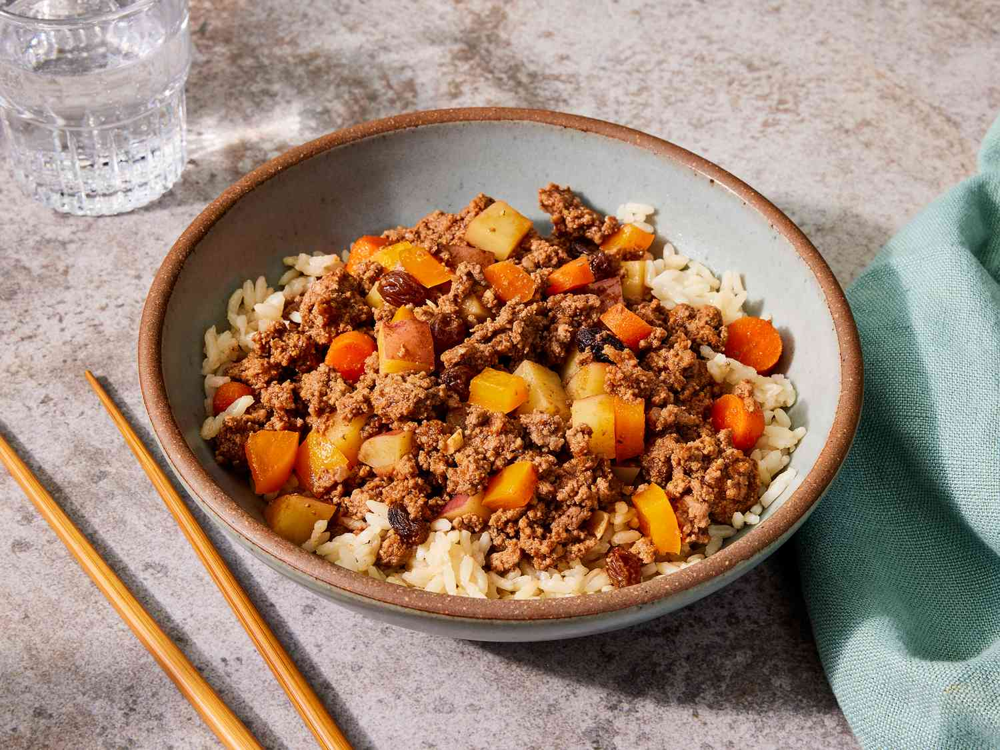

Pork Giniling

Pork Giniling is a pork dish that uses ground pork as the main ingredient.
Pork Giniling is made of ground pork stewed in tomato and water to bring out the taste and vegetables such as carrots and potatoes for additional flavor and nutrition
Ingredients
- 1/2 lb ground pork
- 1 1/2 cups potatoes diced
- 1 cup carrots diced
- 8 ounces tomato sauce
- 6 cloves garlic crushed
- 1 medium-sized onion minced
- 1 teaspoon granulated sugar
- 1 piece beef or pork cube
- 4 boiled eggs shelled (optional)
- Salt and pepper to taste
- 3 tablespoons cooking oil
- 1 cup water
Instructions
- Heat a cooking pot and pour-in the cooking oil.
- When the oil is hot enough, put-in the garlic and sauté until the color turns light brown.
- Add the onions and sauté until the texture becomes soft.
- Put-in the ground pork and cook for 5 minutes.
- Add the beef or pork cube, tomato sauce, and water and let boil. Simmer for 20 minutes.
- Put the carrots and potatoes in then stir until every ingredient is properly distributed. Simmer for 10 to 12 minutes.
- Add salt, ground black pepper, and sugar then stir.
- Put in the boiled eggs and turn off the heat.
- Transfer to a serving bowl and serve.
- Share and enjoy!
Click here for more info about this recipe